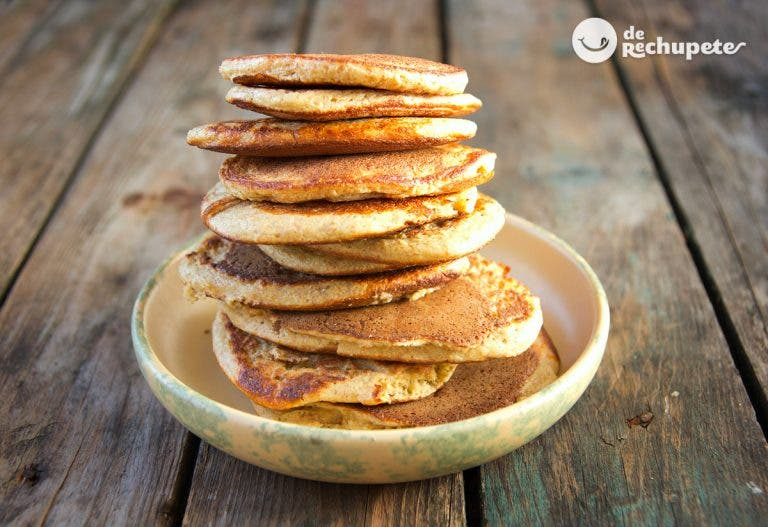

Pancakes

- 150 g de harina de trigo de todo uso
- 2 huevos medianos
- 25 g de azúcar blanquilla
- 50 g de mantequilla
- 200 ml. de leche entera
- Unas gotas de esencia de vainilla
- 12 g de levadura en polvo (levadura química o polvo de hornear
- Una pizca de sal fina (2 gramos)
- Para acompañar: Miel, jarabe de Arce, mantequilla, crema de chocolate, Nutella, Nocilla...
<
Crema de verduras con espárragos

- 14 espárragos trigueros
- 1 cebolla grande
- 1 puerro
- 2 patatas para cocer
- 400 g. de espinacas congeladas
- 500 ml. de agua o caldo de verduras
- 6 quesitos o queso fresco (también se podría añadir un poco de nata para cocinar)
- Sal y pimienta negra recién molida (al gusto de cada casa)
- 50 ml. de aceite de oliva virgen extra
Ir al pricipio